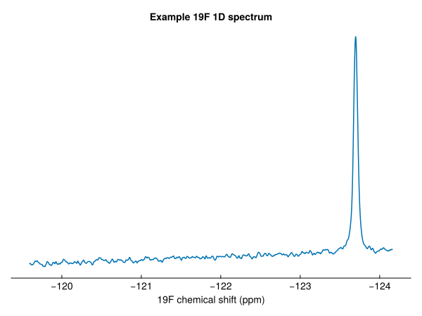
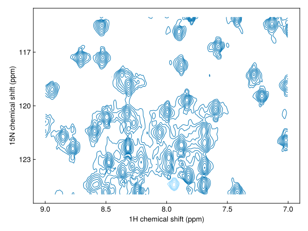
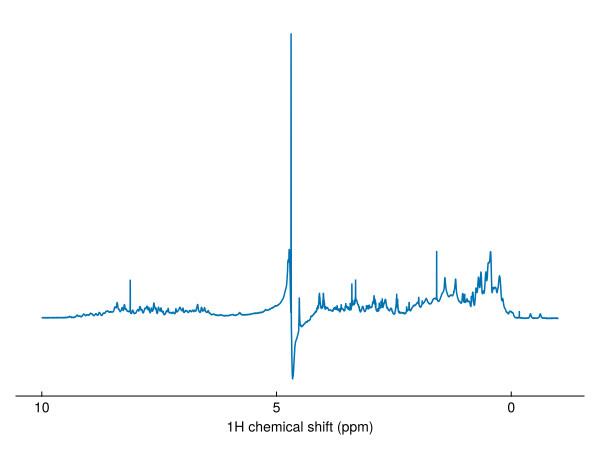

Getting started
This page takes about ten minutes. It loads and plots a 1D and a 2D spectrum, and processes a raw FID into a spectrum.
Installing NMRTools
Install NMRTools.jl and the CairoMakie plotting package through the Julia package manager:
using Pkg
Pkg.add(["NMRTools", "CairoMakie"])Use GLMakie instead of CairoMakie for interactive plots in a window.
Plot a 1D spectrum
NMRTools comes with example data, loaded with exampledata. For your own data, use loadnmr with the path of a Bruker experiment folder or an nmrPipe file.
using NMRTools, CairoMakie
spec = exampledata("1D_19F")
size(spec), label(spec)((5000,), "Example 19F 1D spectrum")nmrplot plots it, with axes labelled from the spectrum's metadata:
fig = nmrplot(spec)
Select a chemical shift range with .. to zoom in. The y-axis rescales to fit:
fig = nmrplot(spec[-124.5 .. -123])
Plot a 2D spectrum
Two-dimensional spectra are plotted in the same way. Contour levels start at five times the noise level:
spec2d = exampledata("2D_HN")
fig = nmrplot(spec2d)
Ranges can be selected in both dimensions, and levels and spacing change the contours:
fig = nmrplot(spec2d[7 .. 9, 115 .. 125]; levels=8, spacing=1.5, title="")
Figures can be saved as vector graphics or bitmaps with save("spectrum.pdf", fig).
Look inside a spectrum
A spectrum is an array with axes and metadata attached:
spec2d[Near(8.5), Near(120)] # the intensity nearest 8.5 ppm, 120 ppm2808.2490234375spec2d[:ns], spec2d[F2Dim, :nucleus] # number of scans; nucleus of the second dimension(2, N15)Process a FID
loadfid loads raw time-domain data, and autoprocess turns it into a phased spectrum: apodization, zero-filling, Fourier transformation and automatic phasing.
fid = exampledata("1D_1H"; fid=true)
spec1h = autoprocess(fid)
fig = nmrplot(spec1h[-1 .. 10]; title="")
autoprocess returns the real spectrum. For a ¹H spectrum in H₂O, it also removes the residual water signal with a solvent filter.
Next steps
- Working with spectra: indexing, axes, metadata and saving
- Processing a 1D spectrum: what
autoprocessdoes, step by step - Peaks and peak lists
- Assigning ubiquitin from the BMRB
- Tools: combining experiments and peak lists from the BMRB